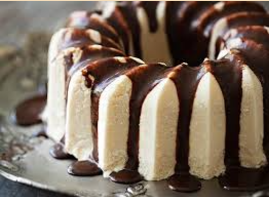

Pudim de sorvete (sorvetão)

O pudim de sorvete (ou sorvetão), é uma sobremesa cremosa e refrescante, ideal para festas e dias quentes. Ele combina camadas de sorvete com ingredientes como leite condensado, creme de leite e biscoitos, podendo ter diferentes sabores e coberturas, como calda de chocolate ou frutas. É preparado em camadas, montado em uma forma e levado ao congelador para firmar. É servido gelado e cortado em fatias, oferecendo uma textura macia e sabor versátil.